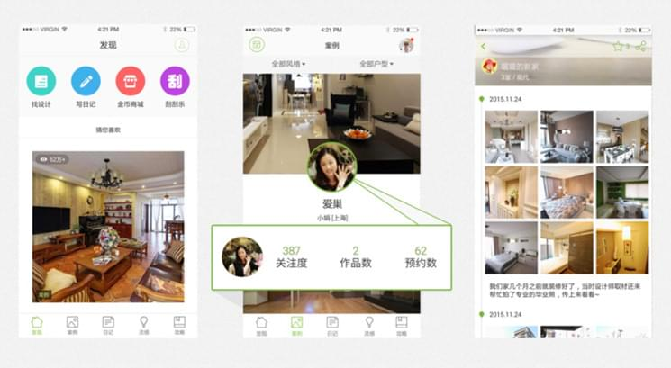
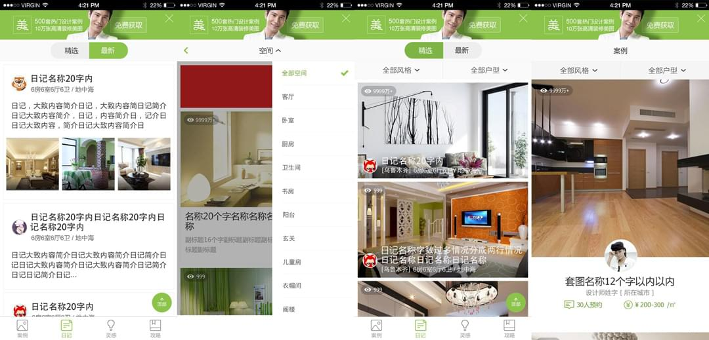
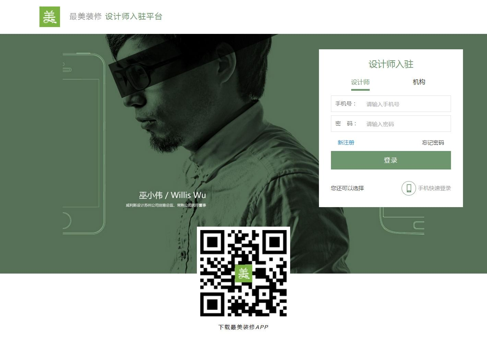
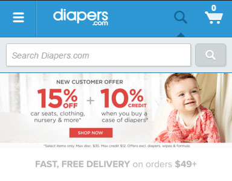
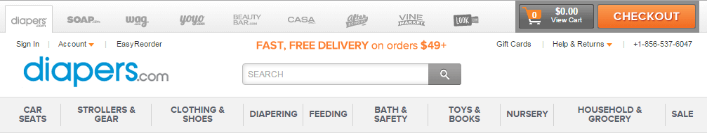

-
- Basic info. 基本信息
- 个人信息: 梁奕铃 / 男 / 31岁
- 教育经历: 本科 / 福建工程学院
- 英语水平: CET-4
- Blog: http://jcpplus.github.io/
- GitHub: www.github.com/jcpplus
-
- Experience. 项目与工作经验
上海齐家网股份有限公司厦门分公司（2015.2 - 至今）
-
最美装修APP App Store 应用宝
最美装修是国内家居行业排名第一的装修类APP。自2015年初上线以来，已经从一个装修图库为主的应用演变成设计师案例（PGC）和装修用户的装修日记、灵感和攻略（UGC）集一体的装修内容和链接平台。最美装修凭借其在移动互联网家装领域的优秀表现获得2015“易观之星飞跃APP”大奖。
在初期，该项目是以Hybird模式进行开发，。我实现了该项目中的一些通用模块如：页面滑动，仿iOS的弹出层，上拉刷新， 下拉刷新等。项目进入正常发展之后，调整成为原生开发。但是这一套组件仍然在M站使用。目前该组件也在不断更新。
承担sprint leader的角色。安排在一个迭代周期内，各小组成员(iOS, Android, API etc)的jira issues.
 -
最美装修手机版 / M站 Link
提供微信平台或者web平台的版本。
根据每一次迭代时间，安排前端开发人员的任务，并分配给其他同学。日常进行任务管理，通过gitlab进行代码review，merge. 根据支撑人员的jira issue进行相关bug的修复或者改进。在需要时也撰写发布邮件，通知发布人员发布系统，并后续小范围跟进。
 -
设计师后台 Link
本项目面向对象为房屋装修设计师。我负责该站点的页面、交互等。并与后端工程师配合完成。分模块实现设计师的注册，登录；上传，编辑案例图等业务。

厦门舜亚科技有限公司（2013.2 - 2015.2）
-
Quidsi - Mobile Web Link
Quidsi是亚马逊旗下的母婴垂直电商平台，是美国最大的母婴在线购物平台(Diapers.com)。厦门舜亚科技曾为其提供技术支撑，成功帮助Diapers.com销售额从600万美金飙升至2010年底的近4亿美金，帮助其在业界获得众多荣誉。
将Quidsi的站点实现了多移动端适配。我作为该项目的主要前端开发人员，选择了在以Foundation为框架的基础上，将多个站点进行了响应式的适配。以适合如iPhone，Android，pad等不同分辨率下的良好体验。引入iconfont. 以减小图标体积，并且兼容性好，易于维护。
 -
Quidsi - Sites All In One
Quidsi的业务发展非常迅速,在2-3年里站点数量增加到9个。为了方便维护，增加用户体验，如 CheckOut 模块，需要在设计风格、字体、页面展示模块，结账步骤展示模块保持一致性，所谓N合一。
Quidsi的项目大而全，工作当中是需要极强的耐心跟耐力的，时时需要注意改动不能引起其他新的问题。

-
- Skill. 技能清单
Web前端
-
HTML / CSS
能够编写语义化的 HTML，模块化的 CSS，完成较复杂的布局
了解 Less, 熟悉 Sass / Autoprefixer 等CSS预处理器和后处理方法、工具
-
JavaScript
熟悉原生Javascript，熟悉jQuery等类库
能运用模块化、面向对象的方式编程
-
其他
日常使用 Grunt 或 Gulp 改进工作流
在项目中使用过 jQuery / jQuery UI / Bootstrap 等类库，并阅读过部分源代码
在项目中使用过 Sea.js / RequireJS / Bower 等多种模块化解决方案
在项目中使用过 Less / Sass / PostCSS 等预处理/后处理工具
掌握 Git / SVN 等版本管理工具的使用
掌握基本的前端兼容性处理、性能优化知识与技巧，并能在项目中加以实践
使用Backbone.js写过简单的CRUD SPA.
在项目中使用过 Weinre / Fiddler / Charles Proxy / Anyproxy等代理工具进行混合开发时的远程调试
其他
-
了解 Vim的使用
能够熟练使用 Markdown 进行写作
知道数据库MongoDB